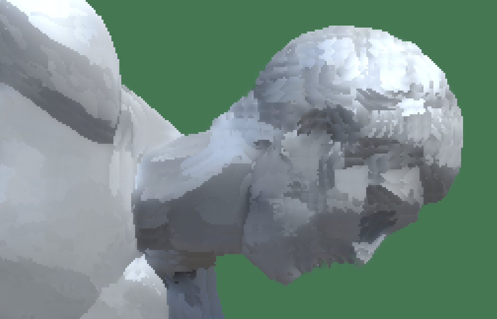
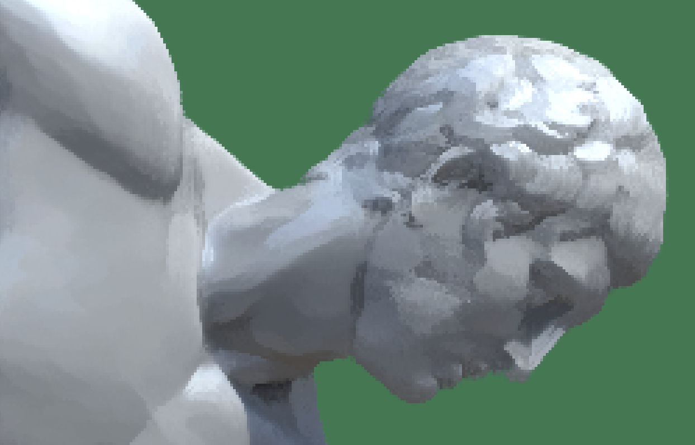
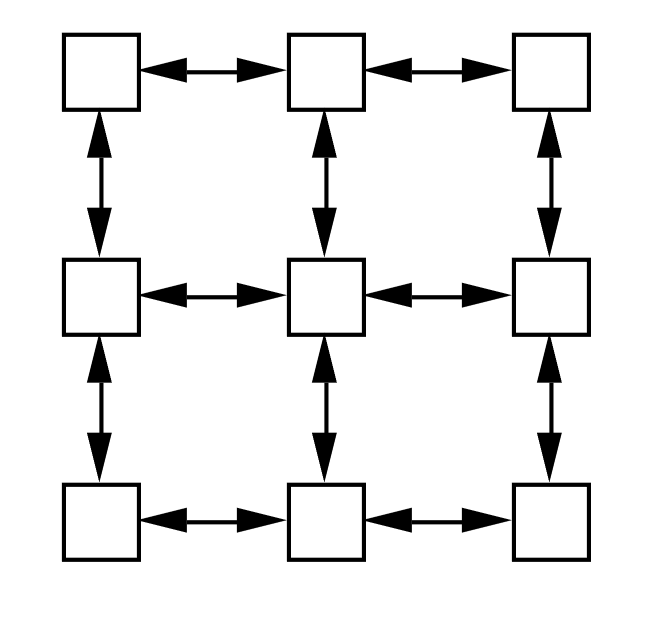
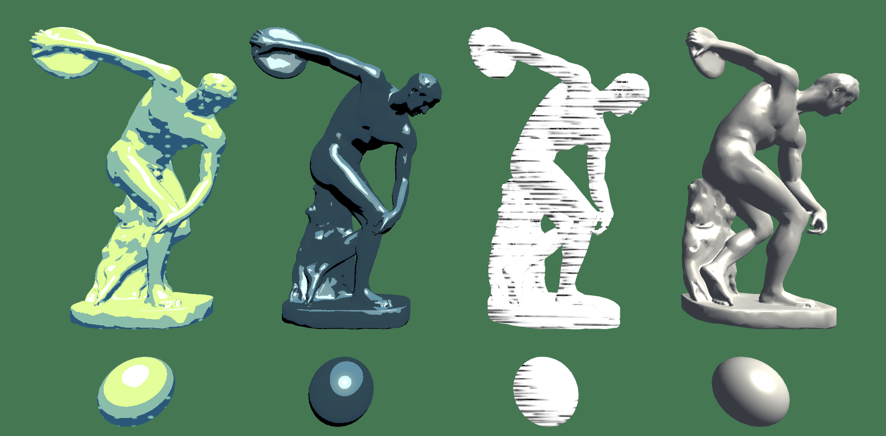
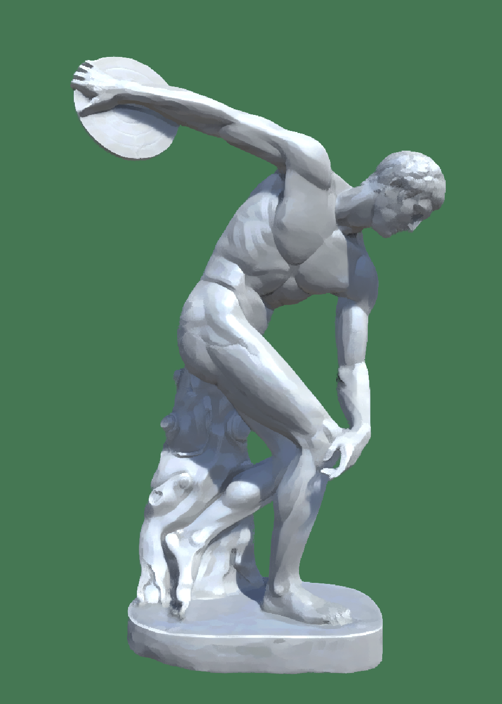
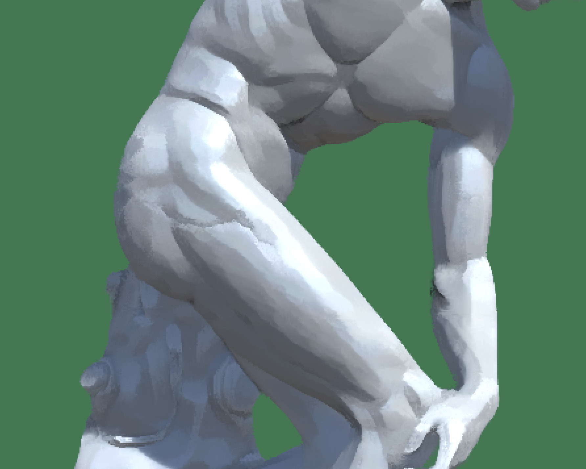
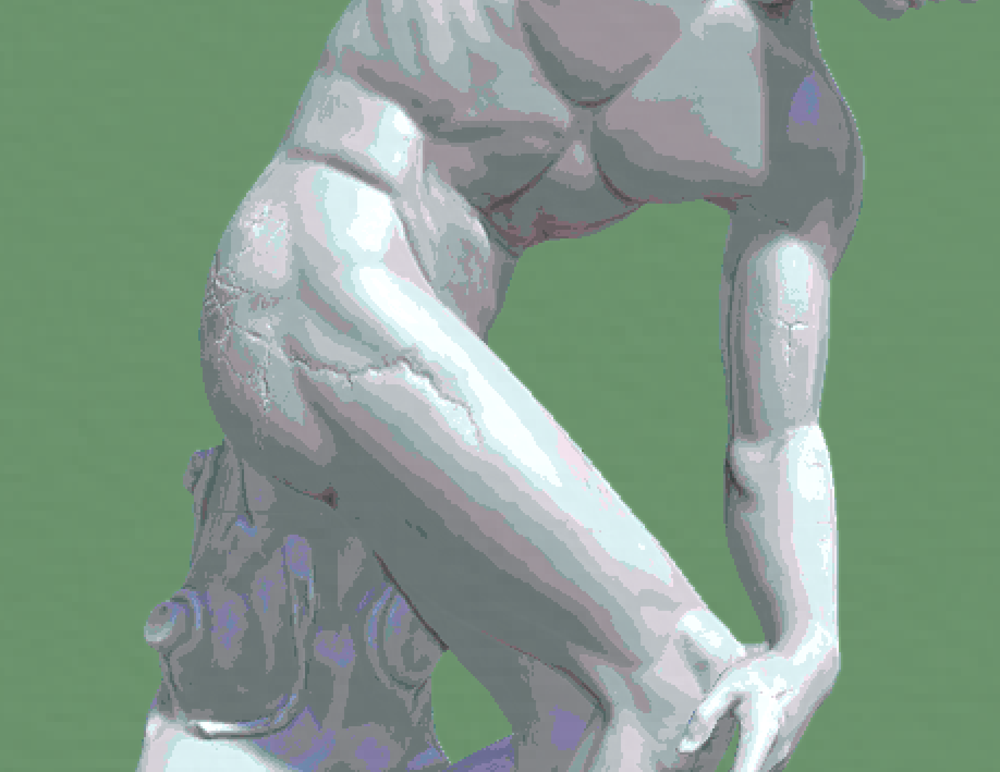
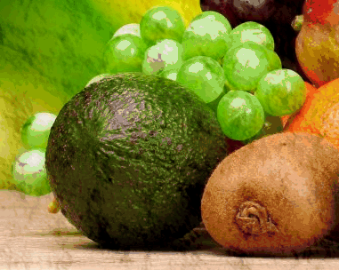

In this project, we implemented a few non-photorealistic shader in OpenGL and Unity. Building off of the code in homework 4, we created a toon shader (with textured shadows) and a hatching shader in GLSL.
We integrated these shaders into the Unity game engine to render additional 3D meshes and create a watercolor shader and paint-like shader, which are both post-processing effects.
Technical Approaches
Toon shader
We created a shader with discrete brightness levels by editting the phong shader in order to get flat colors with different levels of RGB value. In addition, we added rim lighting in order to draw the outline of the objects, which makes them look more like animation.
Comparing with the reference, we edited the texture shader on top of single-color toon shader to put in textures as shades, and made it so that the texture displayed as a flat image parallel to the plane.
Polkadot texture used as shade
Other texture used as shade
Hatching shader
We first utilized the Phong lighting model to calculate diffuse and specular lighting contributions based on the light position, camera position, surface normal, and view direction.
Then, we sampled from multiple tonal art maps at different mipmap levels, depending on the brightness values computed from the lighting calculations. We interpolated between two nearest levels to ensure smooth transitions between different levels of mipmap.
Comparing with the reference, we implemented a simplified version of the tonal blending technique, focusing on blending between textures based on brightness values rather than a comprehensive 6-way blend. Since GLSL only allow 4 textures imported, we restrict our levels to 4 only. In addition, it's hard to find tonal art maps with high resolution online. Hence, we used pure white as a part of mipmaps.
Different levels of mipmap used for hatching
Painter-like shader
Approach: We utilized Kuwahara filters to create a paint-like shader, which is applied in the post-processing step after objects are rendered. The Kuwahara filter reduces image noise and preserves edges, creating an image that looks painted.
The algorithm calculates the average and variance (i.e. standard deviation) of pixel values in four regions surrounding the pixel. The area with the smallest variance will be chosen, and that area's average value will be the pixel's value.
Edges avoid blurring because pixels on one side of the edge favor the region on its own side (due it being more homogenous). This preverses the distinct sides of edges.
Challenges: We had difficulties modifying the homework 4's OpenGL pipeline to allow post-processing filters and custom meshes, so we decided to implement this shader in the Unity game engine. This required time in learning Unity's shaders and render pipeline. Another challenge was that the initial Kuwahara filter had blocky artifacts, especially in high frequency regions, like hair.
We found and utilized a reference for a Kuwahara shader using Sobel edge detection (by Giacomo Tagliaventi), which rotated filter regions to match the orientation of the edge. This does a great job of preserving edges and removing artifacts.

simple kuwahara filter

advanced kuwahara filter with edge-oriented regions
Lessons: The initial Kuwahara filter was provided in GLSL from "Anisotropic Kuwahara Filtering on the GPU," and we learned to translate GLSL to Unity's HLSL shaders. None of us had Unity shader experience, and we learned to modify Unity's fragment shaders, pass variables to shaders, and apply post-processing in Unity, which requires the shader being attached to Unity's camera object.
Watercolor simulation shader
We achieve a watercolor-like effect by modeling the movement of water and pigments. Each pixel of the input image is thought of as a group of paper fibers, which have an absorbency, water and pigment content, etc. Each pixel communicates with its neighbors, which allows us to model diffusion effects of the watercolor.

Pixel communication structure
Each timestep of our simulation consists of the following:
Surface tension: The water and pigments on the surface of the paper experience surface tension, which is an attraction force. Let W_s be a $w * h$ array of the water levels at each pixel, and P_s be a $w * h * 3$ array of the pigment CMY levels at each pixel.
For surface tension in the horizontal direction, we have
\[D_x = s * \frac{W[i][j+1] - W[i][j]}{W[i][j]}\]
\[D_y = s * \frac{W[i+1][j] - W[i][j]}{W[i][j]}\]
Where $D_x$ is the percentage of water/pigment content to transport right, and $s$ is the constant of surface tension. A negative value represents transport left. Similarly for $D_y$.
Gravity: The water and pigments on the surface of the paper experience gravity, which disperses them. We achieve this by a convolution with the filter
\[
\begin{bmatrix}
g/8 & g/8 & g/8 \\
g/8 & 1-g & g/8 \\
g/8 & g/8 & g/8 \\
\end{bmatrix}
\]
This captures how each pixel's water and pigment content is blended with its neighbors'. Here, $g$ is a gravitational constant. We apply this convolution to $W_s$, as well as to each channel of $P_s$.
Paper absorption: In our simulation, the canvas gradually absorbs the water and pigments, locking them into place. Let $A$ be a $w * h$ array of absorbancy values, $W_i$ and $P_i$ be the water and pigment content infused in the paper. We have
\[D = k * A * W_s\]
where $D$ is the water transported from the surface to the paper. A similar equation governs the transport of each pigment.
To render the final image, we take the RGB values of our paper texture and subtract the CMY pigment values. The paper texture adds an artistic touch to our result.
This watercolor shader was heavily inspired by "Modeling Watercolor by Simulating Diffusion, Pigment, and Paper Fibers" by David Small. While our concepts are similar, some equations governing the simulation and all code are original. In particular, we modeled the effect of gravity by a convolution, while Small had a constant force pulling towards the bottom-right corner of the paper. We additionally vectorized all of the operations for efficiency.
Results
Your final images, animations, video of your system (whichever is relevant). You can include results that you think show off what you built but that you did not have time to go over on presentation day.
Toon shader
front view after simulation - greyscale
front view after simulation - blue
side view after simulation - polkadot
front view after simulation - polkadot
side view after simulation - grid
front view after simulation - grid
Hatching shader
front view before simulation - hatching
top view during simulation - hatching
front view during simulation - hatching
front view after simulation - hatching
Shaders in Unity

From right to left: textured shadow toon shader, toon shader, hatching shader, phong shader

paint-like shader
watercolor shader

paint-like shader - zoomed in

watercolor shader - zoomed in
Watercolor simulation shader
original

simulation
Shaders in Blender
After implementing a few shaders in HW4, we wanted to extend our shaders to other meshes.
Our first option that we considered was trying to use Blender's custom shader options, which
could be written in Open Shading Language (OSL). However, as we looked further into it, we found
the language to be very limiting. For example, you were only allowed to use certain pre-made BSDFs,
you could not access certain global variables like the position of the lights, and the data types
were very limited with what they could do. Additionally, there was also a lack of resources online,
and there was very little debugging resources, so it was overall very difficult to get anything to work.
Because of all these limitations, we decided to go with Unity to build more in-depth shaders.
We did however, get to implement a simple toon shader in Blender with the time we were given.
David Small. Simulating Watercolor by Modeling Diffusion, Pigment, and Paper Fibers.” In Proceedings of SPIE '91. February 1991.
Contributions
Alexander Sun: Wrote watercolor simulation, co-wrote toon and watercolor shaders, experimented with rendering custom meshes using homework 4 code, helped debug shaders, helped create the website, and made the videos.
Ryland Hu: Implemented the hatching shader in OpenGL, helped create the toon shader, researched toon shading methods and drawing shadows, helped debug shaders and render objects, helped create textures and the website.
Sydney Tang: Integrated the hatching shader into Unity, experimented with custom shaders in Blender, researched different shader styles and renderers, helped rendering objects, helped create textures and video, and created the slides.
Jaeha Yi: Wrote the paint-like shader, helped create the toon shader, integrated watercolor and toon shaders into Unity, researched Unity's render pipeline, helped rendering objects in Unity, and helped create the website.